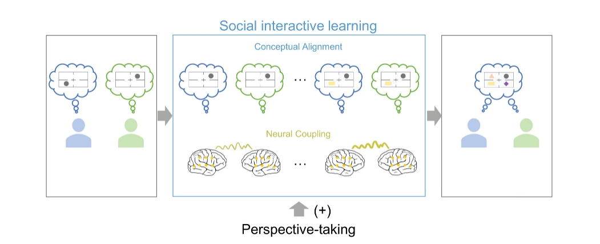

Research
My research primarily centers around social cognitive neuroscience, sleep, memory, and memory-based decision-making, employing a combination of behavioral,
computational, and neuroimaging techniques. current research focuses on the following key questions:
How do our memories guide decision-making?
In our daily lives, memory plays a crucial role in guiding our decisions. While numerous wonderful studies have established a correlational
relationship between memory and value-based decision-making, my research takes a novel approach by employing memory editing techniques during
both wakefulness and sleep, such as Targeted Memory Reactivation (TMR) during sleep and Think/No-think (TNT) during wakefulness.
Particularly, beyond the decisions themselves, my research also focuses on the dynamic processes of decision-making by utilizing computational
modeling and mouse-tracking methods. Understanding this relationship can shed light on why maladaptive decisions, such as overtrust, addiction,
and drug use, occur. This knowledge could lead to the development of memory-based interventions to improve decision-making. Ultimately, our
goal is to help individuals - including those who are healthy, clinical patients, and the aging population - make more rational decisions and avoid
maladaptive behaviors.
How does sleep support social learning?
Daytime social learning subtly endows individuals with crucial social knowledge, such as understanding social norms and social relationships in a
complex and hierarchical social network, and even contributes to cultural development. Sleep, as an active process, continuously processes daily
information, consolidating memories for future use. Therefore, it is plausible that sleep also plays a vital role in processing social learning, thereby
largely impacting our social and even personal lives. My research seeks to investigate how sleep, in conjunction with Targeted Memory Reactivation (TMR)
during sleep, facilitates social learning and reorganizes social knowledge. By elucidating the central role of sleep in social learning, my research aims
to understand how social learning perpetually influences human behavior.
How do social-motivational processes help us (selectively) remember and forget?
As inherently social beings, our interactions significantly shape our identities through the memories we retain and discard. My goal is to investigate how
(lack of) social-motivational factors influence memory formation, transformation, forgetting, and updating, the memory processes that are central to our self-concept
and critical in guiding our decisions and maintaining mental health. I am particularly interested in the (selective) memory reactivation during sleep.
Besides healthy individuals, my research also aims to extends to clinical populations, such as individuals with anhedonia symptoms.
Ultimately, my research aims to elucidate the mechanisms through which social experiences contribute to the development of our personal identities.
Interpersonal Neural Synchronization Supporting Social Interaction
Before pursuing my Ph.D., I focused on the interpersonal neural synchronization underlying human cooperation and communication, utilizing EEG- and fNIRS-based hyperscanning techniques. In the field of interpersonal neuroscience, rather than examining individual brains, we investigated social interactions as integrated systems, aiming to quantify these interactions through measures of interpersonal neural synchronization.
(Fig.8, Chen, Zhang et al., 2022, Human Brain Mapping)
My research interests are continually evolving, and I am eager to engage in discussions with others who share similar interests.
[Updated on Oct 13, 2024]
Danni CHEN
Ph.D. Candidate
Social and Cognitive Neuroscience Lab
Department of Psychology
The University of Hong Kong
Contact
Email: dnchen@connect.hku.hk
Twitter: @DanniChen9707
Address: Room 712, 7/F, The Jockey Club Tower, Centennial Campus, The University of Hong Kong, Pokfulam, Hong Kong
Copyright © 2024 | Danni Chen | All Rights Reserved